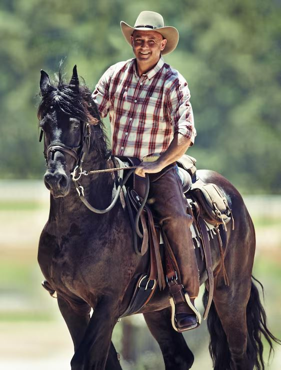

HarasBangalô
Mangalarga Marchador de marcha macia, criado em Caculé, Bahia.
O haras
O Haras Bangalô fica em Caculé, no sudoeste da Bahia, região que virou polo de criação do Mangalarga Marchador no estado. (Complete aqui: quando o haras começou, quem cuida do plantel e a história da família.)
Trabalhamos com marcha picada e marcha batida, buscando animais de marcha regular, temperamento dócil e boa estrutura — os critérios do padrão da raça. Todo cavalo à venda pode ser visitado: é só combinar pelo zap e vir conhecer de perto, montar e ver a marcha ao vivo.

≈ 200anos de história da raça
1,52 maltura ideal na cernelha
4 temposde marcha, sem solavanco
2014raça nacional (Lei nº 12.975)
Por que o
Haras Bangalô?
Comprar cavalo é decisão de confiança. Veja o que você pode esperar de nós:
- ✓Mangalarga Marchador selecionado, de criação conhecida
- ✓Animais avaliados: marcha, estrutura e temperamento
- ✓Visita presencial: monte e veja a marcha ao vivo
- ✓Vídeos reais da marcha de cada cavalo
- ✓Auxílio no transporte até a sua propriedade
- ✓Atendimento direto pelo WhatsApp, sem intermediário
Por que ele
anda tão macio
A raça nasceu há cerca de 200 anos, no Sul de Minas, do cruzamento de cavalos Alter-Real de Portugal com éguas selecionadas da região. O resultado foi um cavalo com um andar próprio: a marcha, de quatro tempos, com apoio constante no chão. Em 2014 ela virou oficialmente a raça nacional brasileira. Toque nos botões e compare os andamentos.
O número é a ordem em que a pata toca o chão. Patas com o mesmo número tocam juntas. Esquema simplificado, visto de cima.
| Marcha picada | Marcha batida | Trote | |
|---|---|---|---|
| Batidas por passada | 4 | 4 | 2 |
| Apoio dominante | Lateral (mesmo lado) | Diagonal | Par em diagonal |
| Contato com o chão | Sempre | Sempre | Tem instante no ar |
| Passada | Curta e rápida | Longa e cadenciada | — |
| Conforto ao montar | Máximo | Alto | Baixo (solavanco) |
| Ideal para | Cavalgadas longas e iniciantes | Trilhas, campo e esporte | Não é da raça |
Por que o cavalo anda assim?
Não foi sorte. Na Comarca do Rio das Mortes, no Sul de Minas, os criadores precisavam de cavalos que aguentassem longas jornadas por estrada de terra e montanha sem cansar quem montava. José Frausino Junqueira, sobrinho do Barão de Alfenas e exímio caçador de veados, valorizava justamente cavalos resistentes e ágeis para percorrer grandes distâncias. Com o tempo, a criação premiou os animais que andavam com apoio constante no chão e pouco impacto. Hoje sabe-se que a marcha picada tem forte componente genético (gene DMRT3), e a raça foi declarada oficialmente brasileira em 2014 (Lei nº 12.975).
Cavalos
à venda
Preços e disponibilidade podem mudar. Confirme no WhatsApp.
Acompanhe
o Haras
Fotos e vídeos do dia a dia: potros, cavalgadas e a marcha dos animais. Siga a gente no Instagram.
Já passaram
pelo Bangalô
Bora
conversar
Escolha o assunto e a conversa já abre no WhatsApp com a mensagem pronta.
Onde estamos
Caculé, Bahia
(coloque o endereço ou a estrada de acesso)
Visitas
Com hora marcada, todos os dias. (Ajuste o horário.)
Transporte
Ajudamos a combinar a entrega. (Ajuste as regiões atendidas.)